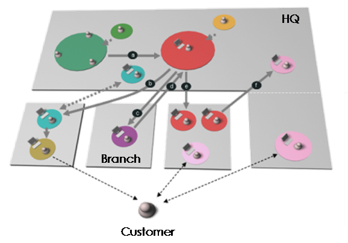
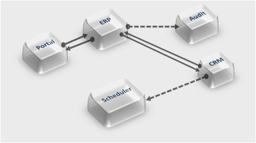

OUM |
Task Overview |
||
Method Navigation |
Current Page Navigation |
||
|
|
||||||||
The purpose of this task is to identify the enterprise functions or processes being examined. This is often done in parallel, or “back-and-forth” with the creation of the Enterprise Domain Model (BA.050). The Enterprise Domain Model may provide input and be an aid to identify the functions or business processes, and vice versa, the identification of functions or business processes may provide input to the Enterprise Domain Model.
At the very highest levels, the function and process models are the same, as they both identify the enterprise functional areas to further detail using different modeling notation.
Once agreed, ‘just enough’ process modeling principles should be taken into account for high-level enterprise and solution architecture engagements, that is, at a sufficient level to be able to identify the relevant architectural components in a ‘Current State’ architecture definition exercise or the architectural improvement options in a ‘Future State’ architecture definition exercise. In this case, you would not typically define a business process beyond the ‘logical’ level (i.e., Level 3 on the diagram below).
In functional modeling, you identify enterprise function levels in a way that is identical to the strategic approach of business process modeling. However, functional modeling does not prescribe how you actually model the business process flows (level 2 and below). You may also choose to capture the flows as scenarios in a use case model for detailing the lower levels. In other words, functional and business process modeling are one and the same up to level 1.
See the Functional or Process Modeling technique for more details.
INIT.ACT.EDGI Execute Discovery - Gather Information (As Is)
Enterprise Function or Process Model
The model documents the sets of business functions or processes that are organized into levels where each level is comprised of functions or processes of a similar type. The model includes the following:
and optionally,
You should follow these steps:
No. |
Task Step | Component | Component Description |
|---|---|---|---|
1 |
Choose either functional or process modeling strategy. | Functional or Process Modeling Strategy | The Functional or Process Modeling Strategy describes which modeling strategy you have chosen and whether you are using a strategic or tactical approach. |
If functional modeling or a strategic approach to modeling is chosen, perform the following steps: |
|||
2 |
Perform high-level functional modeling. | Enterprise High-Level Function or Process Model | The Enterprise High-Level Function or Process Model contains the level 1 and 2 functions or processes of the enterprise. |
3 |
Update Enterprise Repository Taxonomy. | Updated Enterprise Repository Taxonomy | The updated Taxonomy of the Enterprise Repository now includes the classifications that were identified during the previous step. |
4 |
Update Enterprise Repository. | Updated Enterprise Repository | The Updated Enterprise Repository includes the Enterprise Function or Process Model you have created. The Functions are assets in the Repository. |
The following additional steps are only performed in the context of business process modeling. They may not be performed at the enterprise level where the functional modeling may be sufficient or they may be performed in a second iteration in which a limited set of business processes have been scoped. |
|||
5 |
Identify key events for business processes. | Process Event Catalogue | The Process Event Catalogue lists, for each process, every event that triggers the process, from where the event is initiated, and the frequency of the event. |
6 |
Create/update process models. | Process Models | This component shows the business processes visually as a flow. |
7 |
Identify key events for business processes. | Process Event Catalogue | The Process Event Catalogue lists, for each process, every event that triggers the process, from where the event is initiated, and the frequency of the event. |
8 |
Identify CRUD matrix to the Domain Model. | CRUD Matrix | The CRUD Matrix shows what business entities are used and how they are used for each business process and each step in the process. |
9 |
Update Enterprise Repository. | Updated Enterprise Repository | The Updated Enterprise Repository contains the updated assets you have changed or created. |
This task is often done in parallel, or “back-and-forth” with the creation of the Enterprise Domain Model (BA.050). It is often accomplished through one or more workshops. The approach taken is largely dependent on the nature/scale of the engagement. Wherever possible, ‘Just enough’ principles should be adopted to ensure business processes/business functions are defined at the relevant level to support the nature of the exercise. For example, for the initial enterprise and solution architecture discussion, you may need to limit the definition of business functions/processes to support high level architectural improvement component mapping to business functions/processes. In such cases, you would normally only define processes up to Level 3 (i.e., Logical Level only – see diagram below).
There is a recurring debate on the definition of functions and processes at different levels of the architecture. In addition, product focused perspectives with tools such as BPMs (workflows), BPEL (workflows and automated sequencing of function points) blur the definitions of these further. The COSMIC functional size measurement methodology (ISO/IEC 1976) may prove useful in defining this further based on the behavioral characteristics of distributed processing.
Common opinion for the distinction in the public domain is summarized as:
Function = Individual building block
Process = Blueprint that either shows how the individual blocks work together OR Series of activities that use individual blocks
Function Definitions:
Process Definitions:
Therefore, the definitions largely depend on the roles of the stakeholders within an enterprise. For example, we can further refine the modeling process to factor in both human centric workflows (which tend to be more visible to the business) and automated ones (which tend to be defined by the business but is more visible in the realm of technologists) as illustrated in the following two diagrams:

The diagram above illustrates a long lived multi-step process that involves human interaction. Each step of the process must be persisted and re-instantiated when next activated and typically demand a BPM. The following diagram illustrates a short-lived business process.

This type of process might be initiated by a user, but is automated from an end-to-end perspective and is more likely to use BPEL PM (although, the latter also supports human workflows). Application developers may refer to process as being a collection of flows or invocations of APIs.
In summary, we need to establish a common understanding of these terms with the customer’s business stakeholders prior to engaging in this exercise.
It is not uncommon for an enterprise to have already identified and prioritized a number of processes or functions that they wish to use as part of a business modeling. In such a scenario, the enterprise probably has already developed a process analysis approach to be followed.
If not, begin by determining whether you want to model the business processes or simply the business functions of the enterprise. You should also decide whether you want to take a strategic approach or a tactical approach (see below).
Process modeling or functional modeling may be done iteratively providing more and more information to the models, either for each iteration providing more details to each function/process, or to cover a larger part of the enterprise, that is to add functions/processes. There may be different purposes for each modeling exercise, for example to determine the boundaries for one or more projects, or as a means to determine requirements, already within a given boundary.
If the enterprise has not taken a business process approach, you may want to perform enterprise functional modeling outside the context of business processes. In this case, you decompose the enterprise into business functions, without necessarily modeling processes diagrams but using other techniques for the lower levels such as UML use-case analysis.
Taking a strategic approach means that you will start off identifying the top level business functions of the enterprise, and identify the details from there. The strategic approach for both functional and business process modeling is almost identical. Regardless of the approach, analyzing the first three levels of the functional hierarchy results in the same thing: the business is decomposed into functional areas which perform business processes (don’t think of the Business Process from a BPM Tool sense, but rather the way business’s conduct their business). The difference is that the BPM approach assists an organization in choosing particular business processes to undertake, the functional approach assists with choosing one or more projects. A project may tackle only specific parts of one or more functional areas of business processes.
If you have decided to take a strategic approach to identifying business processes or functions, then you can use a function model decomposition approach to assist in selecting suitable business process(es) that align/assist with the enterprises business goals and objectives. At this level, we do not go into great detail about function model decomposition.
In contrast to the strategic approach, it is also possible to proceed by selecting “low-hanging fruit” business processes or functional areas. For business processes, it is often related to current pain points, while for functional modeling it is often related to one or more already identified projects that determine the scope of the functional modeling approach.
This tactical approach can be used to gain visibility and to gain senior management commitment for future project work.
If you have chosen a tactical approach to “process identification”, or functional area selection, is appropriate then a quick decision process is made on which business process(es) or functional areas to concentrate on. These can be derived from project requirements or current pain points.
When taking a pure BPM approach to selecting tactical processes, enterprises tend to select a business process which is documented within the project requirements, or focus on an existing process or set of processes that are causing the organization pain today. Similarly, with a functional approach, the projects determine the functional areas that get the immediate attention based on pain points.
Organizational pain can include:
Ideally the processes or projects selected should achieve at least one or more of the organization’s objectives. Selection based on “low-hanging fruit” tends to be driven in a “bottom-up” approach and rarely includes senior management in the decision process. Successes using this approach serve to build early wins and establish confidence.
If you have chosen to perform functional modeling or strategic business process modeling, see the Functional or Process Modeling technique for more details.
Business functions are an obvious way to classify assets in the Maintained Repository of Artifacts (IP.080).
If a repository is used in the enterprise, and the high-level functional modeling has been performed, update the repository taxonomy based on the business functions identified.
If an Enterprise Repository is used, each component of the Function or Process Model should be inserted in the Enterprise Repository as assets linked to each other with a hierarchy of relationship. Check the repository for existing models to avoid duplicates if this is not the first iteration. This step is in addition to the previous step of having a taxonomy based on the Function Model.
This step is particularly important if requirements are managed at the enterprise level. Managing requirements at the enterprise level is a must where reuse across projects is required such as it is when the enterprise is has a SOA strategy.
See the Enterprise Requirements Management technique for more details about enterprise management of requirements through function and process models.
Once processes have been identified via either the strategic or tactical approach, you should be able to identify at least one key event that triggers each process. It may be that multiple events trigger the same process. If you know the enterprise processes up front, ask what kind of events (internal and external) trigger the process, partly or fully. If you do not know the processes up front, ask what kind of events (internal and external) to which the enterprise must respond.
In some cases, you may want to model business processes at the enterprise level, or you may chose to only model them at the project level. This step is only required in the former case, and in most cases not for the whole enterprise but only after scoping has been refined.
Various modeling techniques are available. See the Functional or Process Modeling technique for more details. Choose the technique and tool that is most appropriate for your situation.
If you have done domain modeling, it may also be of value to determine what business entities are used in what processes, and how they are used. You can use a CRUD (Create, Retrieve, Update, Delete) matrix as a tool to determine this.
If a repository is used in the enterprise, update it by adding new models using the classification identified. Create the dependency links toward the earmarked models.
If requirements have been identified during this task, they should also be recorded in the Enterprise Repository and each of them linked to a function at one of the levels in the model, that is a function, a business process, an activity, a step, etc.
This Envision work product is a prerequisite touch point to an OUM Implement task(s). You should review the corresponding Implement task(s), to determine information required before the Implement task can begin. The work product produced by this task may become an artifact used by subsequent IT Portfolio Project Implementation engagements.
This task has supplemental guidance that should be considered if you are executing a service based on the BPM Project Engineering view. Use the following to access the task-specific supplemental guidance. To access all BPM Project Engineering supplemental information, use the BPM Project Engineering Supplemental Guide.
This task has supplemental guidance that should be considered if you are performing an engagement using the Business Process Management (BPM) Roadmap service offering. Use the following to access the task-specific supplemental guidance. To access all BPM Roadmap supplemental information, use the BPM Roadmap Supplemental Guide.
This task has supplemental guidance that should be considered if you are performing an engagement using the Service-Oriented Architecture (SOA) Modeling Planning service offering. Use the following to access the task-specific supplemental guidance. To access all SOA Modeling supplemental information, use the SOA Modeling Planning Supplemental Guide.
This task has supplemental guidance that should be considered if you are doing a SOA Project Delivery implementation. Use the following to access the task-specific supplemental guidance. To access all SOA Project Delivery supplemental information, use the OUM SOA Project Delivery Supplemental Guide.
This task involves the following method roles:
Role |
Responsibility |
% |
|---|---|---|
Enterprise Architect |
Elicit current enterprise functions and processes from customer resources, mediated and reviewed by the customer enterprise architect. This task may require participation of an enterprise architect who specializes in Business Architecture. | 100% |
Customer Enterprise Architect |
Work with the enterprise architect and mediate and review enterprise functions and processes. | * |
* Participation level not estimated.
You need the following for this task:
Prerequisite |
Usage |
|---|---|
Business Strategy (BA.010) |
Use the Business Strategy to determine which processes are of relevance. |
Business Scope (BA.012) |
Use the Business Scope to define where you should focus your efforts. |
Enterprise Organization Structures (BA.020) |
Use the Enterprise Organization Structures to understand the organization units for which the enterprise processes may be relevant. |
Enterprise Glossary (BA.030) |
Use the Enterprise Organization Structures to understand the terminology. |
Mandate Matrix (GV.020) |
|
Governance Implementation (GV.100) |
If an Enterprise Repository is in use, the Governance Implementation (that is, the related policies and processes) describes how to govern the Enterprise Function or Process Models. In addition, ensure that the Enterprise Function or Process Model(s) is added/updated in the repository. |
The following techniques are available to assist with this task:
Technique |
Comments |
|---|---|
This technique provides assistance in utilizing enterprise function or process models as a requirements gathering technique and describes the different levels of business process models. |
|
This technique helps to what projects will get the most out of an SOA approach. |
|
This technique provides assistance on how to manage requirements at the enterprise level. |
|
The Workshop Techniques Handbook provides detailed descriptions of various techniques for delivering workshops during customer projects. |
|
MS WORD - This file contains several sample workshop checklists that can be tailored for delivering workshops during customer projects. |
|
MS WORD - This file contains a sample workshop plan/agenda. |
The following templates and tools are available to assist with this task:
Template File Name |
Comments |
|---|---|
| MS WORD |
Example |
Comments |
|---|---|
| Provides a scenario example that will be useful when performing this task |
Tool Guidance |
Comments |
|---|---|
| The Enterprise Architecture Resources provides links to additional resources that may be useful in completing this task. | |
| This document provides touch points (potential inputs) of Envision work products to Implement tasks. | |
| The Oracle Enterprise Repository is a COTS Enterprise Repository tool solution that is used to establish and maintain an Enterprise Repository. |
This section is not yet available.
This section is not yet available.

Copyright © 2006, 2016, Oracle and/or its affiliates. All rights reserved.